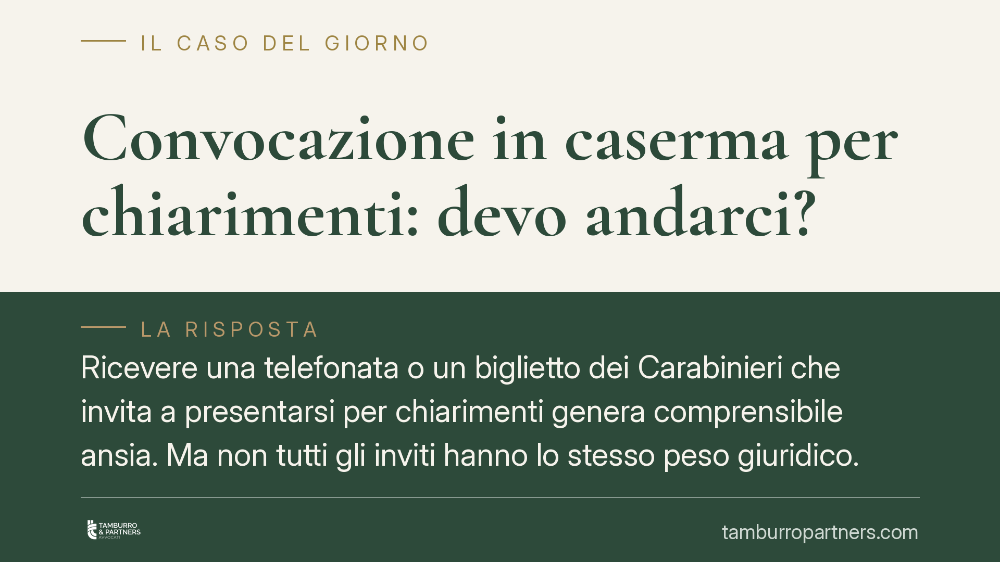

Convocazione in caserma per chiarimenti: devo andarci?
Ricevere una telefonata o un biglietto dei Carabinieri che invita a "presentarsi per chiarimenti" genera comprensibile ansia. Ma non tutti gli inviti hanno lo stesso peso giuridico. Distinguere tra sollecitazione informale e convocazione formale è decisivo: cambia l'obbligo di andarci, cambiano le conseguenze del rifiuto e cambia la posizione di chi risponde.

Il fatto: due inviti che sembrano uguali ma non lo sono
Capita spesso: un maresciallo telefona e chiede di "passare in caserma per qualche chiarimento". Oppure arriva un foglio scritto. Il primo istinto è chiedersi se sia obbligatorio andarci. La risposta dipende dalla natura dell'invito e dal ruolo che la persona riveste nel procedimento.
Inquadramento normativo
Occorre distinguere due situazioni.
La prima è l'invito informale della polizia giudiziaria. Un contatto telefonico o un invito verbale, privo di forma tipizzata, non comporta un obbligo giuridico di presentarsi. Non esiste una norma che sanzioni la mancata risposta a una sollecitazione informale. Chi la riceve può, in linea di principio, non aderirvi.
La seconda è la convocazione formale disposta dal Pubblico Ministero. L'art. 375 c.p.p. disciplina l'invito a presentarsi rivolto dal PM alla persona sottoposta a indagini o alla persona informata sui fatti: l'atto deve contenere l'indicazione dell'autorità, il giorno, l'ora e il luogo, oltre all'avvertimento che, in caso di mancata comparizione senza legittimo impedimento, può essere disposto l'accompagnamento coattivo.
L'accompagnamento coattivo, in fase di indagini preliminari, è previsto dall'art. 376 c.p.p.: se la persona regolarmente invitata dal PM non si presenta e non ha addotto un legittimo impedimento, il Pubblico Ministero può disporne l'accompagnamento con la forza pubblica. È questa la vera differenza rispetto all'invito informale.
Persona informata sui fatti e indagato: due posizioni diverse
La qualità con cui si viene sentiti cambia tutto.
La persona informata sui fatti (il vecchio "testimone" nelle indagini) ha l'obbligo di dire la verità. Le dichiarazioni false o reticenti rese al PM sono punite dall'art. 371-bis c.p.. Questa persona, se regolarmente invitata dal PM, non solo ha l'obbligo di presentarsi, ma risponde penalmente per il silenzio menzognero.
L'indagato, invece, ha diritto al silenzio. Può scegliere di non rispondere e non ha alcun obbligo di verità. Deve però comparire, se formalmente convocato dal PM, salvo esercitare i propri diritti difensivi una volta presente. Per questo, prima di rendere qualunque dichiarazione, è essenziale sapere in che veste si viene ascoltati.
E l'art. 650 c.p.?
Si tende a evocare l'art. 650 c.p. (inosservanza dei provvedimenti dell'autorità) come sanzione per chi non si presenta. Va usato con prudenza. La giurisprudenza di legittimità ne dà un'interpretazione restrittiva: la norma punisce l'inosservanza di un provvedimento legalmente dato per ragioni di giustizia, sicurezza, ordine pubblico o igiene, ma non copre automaticamente ogni invito degli inquirenti. Un semplice invito a presentarsi per chiarimenti, di regola, non integra l'ordine tipizzato richiesto dall'art. 650 c.p.
Implicazioni pratiche
Per il cittadino il punto è concreto: capire se l'invito è formale o informale e in quale ruolo si è chiamati. Rispondere a un invito informale senza consapevolezza espone al rischio di rendere dichiarazioni non ponderate. Ignorare invece una convocazione formale del PM può portare all'accompagnamento coattivo. La linea di condotta non è mai unica: dipende dagli atti.
Cosa fare in concreto
- Verifica la natura dell'invito. Distingui tra telefonata o sollecitazione verbale (informale) e atto scritto proveniente dal Pubblico Ministero con data, ora, luogo e avvertimenti (formale).
- Chiarisci la tua veste. Chiedi se sei convocato come persona informata sui fatti o come persona sottoposta a indagini: gli obblighi e i diritti sono diversi.
- Non rendere dichiarazioni improvvisate. Prima di rispondere nel merito, valuta con un difensore cosa dire e cosa no, soprattutto se emerge una tua posizione di indagato.
- Non ignorare una convocazione formale del PM. In caso di impedimento reale, comunicalo tempestivamente e documentalo, per evitare l'accompagnamento coattivo ex art. 376 c.p.p.
- Fatti assistere fin dal primo contatto. Il diritto di farsi accompagnare o consigliare da un avvocato vale anche in fase preliminare.
Consigliamo, in ogni caso di incertezza sulla natura dell'invito o sulla propria posizione, di far esaminare l'atto ricevuto prima di presentarsi.
---
Contributo informativo a cura di Tamburro & Partners - Avv. Giuseppe Tamburro. Non costituisce parere legale.
Ogni condominio ha una storia a sé.
Se gestisci un'amministrazione e vuoi un confronto su una specifica questione condominiale, scrivi allo studio. Ti rispondiamo entro un giorno lavorativo.